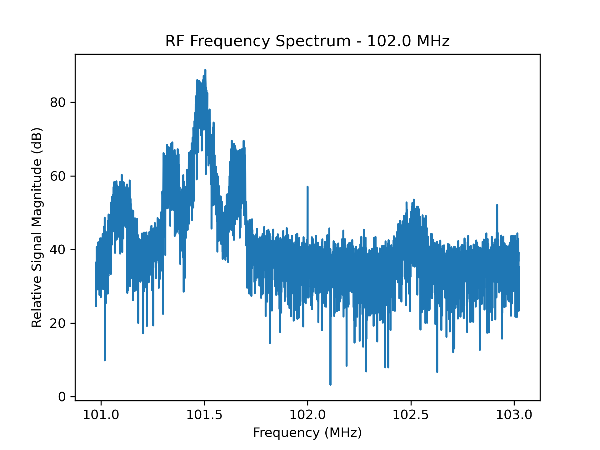
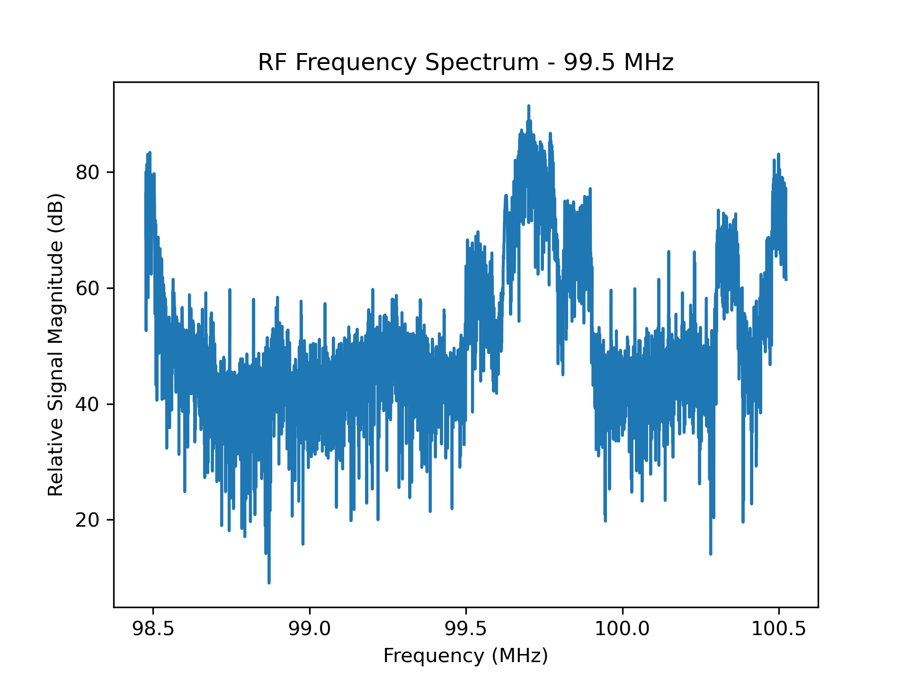
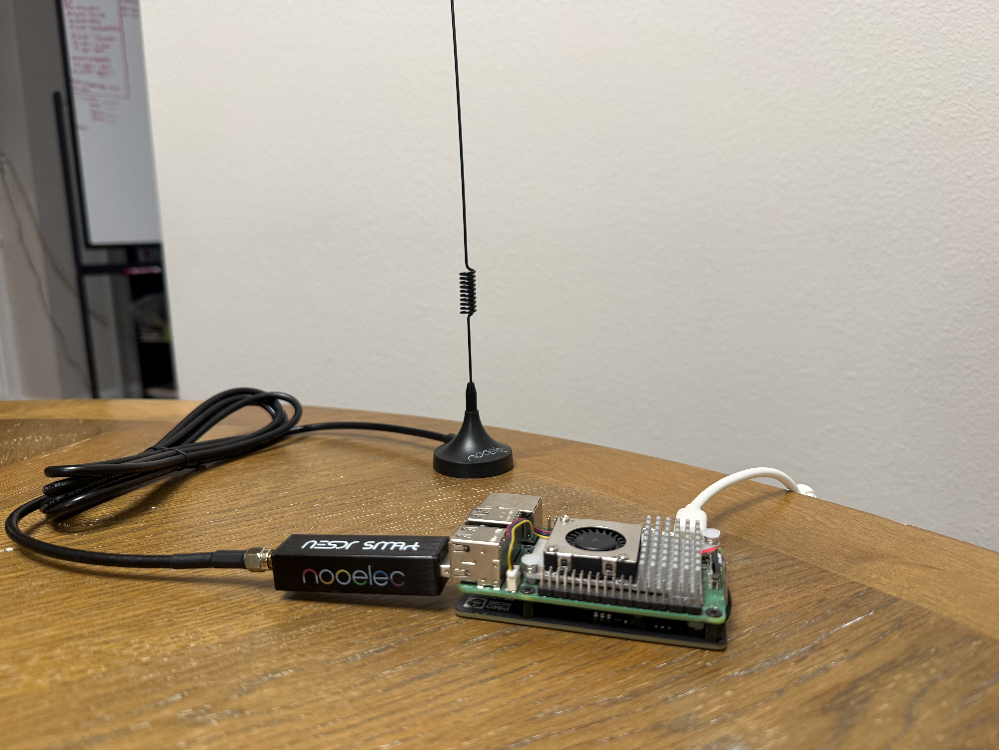
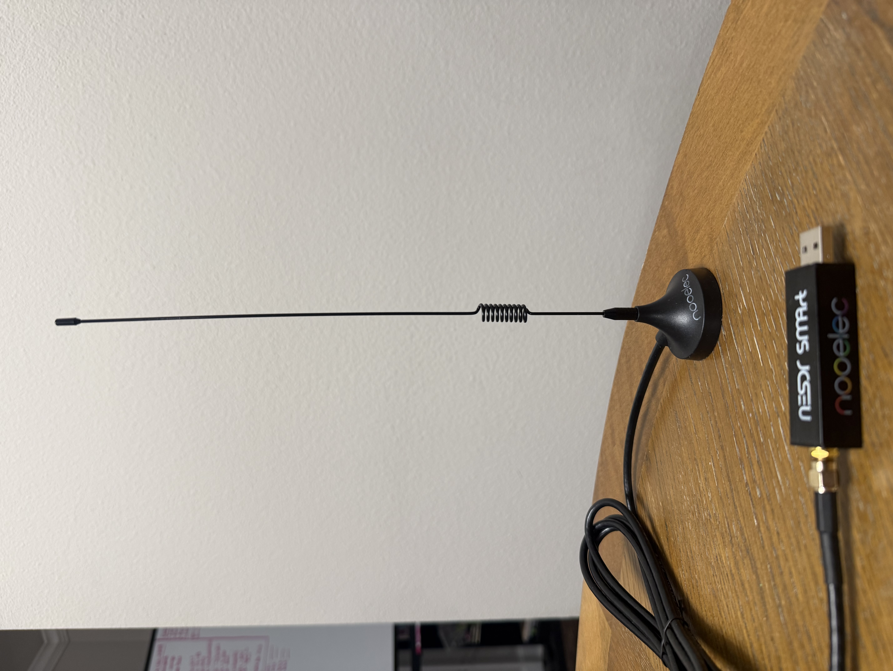

RF Signal Analyzer
A Raspberry Pi 5 and RTL-SDR spectrum analyzer, written in Python, that detected a strong 101.5 MHz signal and ruled out a receiver artifact.
Goal
Capture real radio signals with low-cost hardware and find out what is in the spectrum.
What I built
A Python pipeline that reads raw IQ samples, runs an FFT, plots the spectrum and reports the strongest peak.
Result
A 101.53 MHz peak, 49 dB above the average, that stayed put when I retuned the receiver.
Results

A strong RF signal was detected near 101.5 MHz across two different receiver tuning frequencies.
The results are consistent with a possible FM broadcast signal, but its source is not confirmed. Magnitude values are relative FFT measurements, not calibrated dBm.
How I checked it was real
A peak that appears exactly at the center frequency can be a receiver artifact, such as the DC spike common to RTL-SDR hardware. To rule that out, I captured at two center frequencies and checked whether the peak followed the tuning.
| Experiment | Center frequency | Strongest peak |
|---|---|---|
| 1 | 101.5 MHz | 101.5 MHz |
| 2 | 102.0 MHz | 101.5 MHz |
In experiment 1 the peak sat at the center, so on its own it could have been an artifact. In experiment 2 the peak stayed at 101.5 MHz, 0.5 MHz below the new center. A fixed peak that doesn't follow the tuning is what an external signal looks like.

How it works
The RTL-SDR captures raw in-phase and quadrature (IQ) samples from a selected band. Python converts them to complex numbers and applies a Fast Fourier Transform (FFT) to find the signal's frequency components. The analyzer then plots the spectrum and identifies the strongest component in the capture.
samples = sdr.read_samples(N) # complex IQ samples
spectrum = np.fft.fftshift(np.fft.fft(samples))
freqs = np.fft.fftshift(np.fft.fftfreq(N, 1 / sample_rate)) + center_freq
magnitude_db = 20 * np.log10(np.abs(spectrum))
peak_freq = freqs[np.argmax(magnitude_db)]Setup
Hardware
- Raspberry Pi 5
- Nooelec NESDR SMArt v5 RTL-SDR
- RTL-SDR antenna
Software
- Python
- NumPy and Matplotlib
- Linux command-line tools
Capture settings
- Sample rate: 2.048 MS/s
- Span: about 2 MHz around the center


Engineering challenges
Real signal or artifact?
A peak at the center frequency can be a DC spike. I retuned the receiver and confirmed the peak stayed at a fixed frequency.
Reading the FFT
I had to map FFT bins back to real frequencies by shifting the output and adding the center frequency.
Relative vs. calibrated power
The values are relative FFT magnitudes, not calibrated dBm, so I report peak height above the average instead of absolute power.
Next steps
- Match the peak to a licensed FM station using the FCC station database.
- Calibrate the measurements to dBm against a known reference.
- Detect multiple peaks and add a live waterfall display.
- Demodulate the FM signal to audio.
What I learned
I gained practical experience debugging a system that combines physical hardware with software, from configuring the SDR to interpreting FFT output.
- Linux
- Python
- NumPy
- Signal processing
- FFT analysis
- SDR hardware
- Hardware debugging